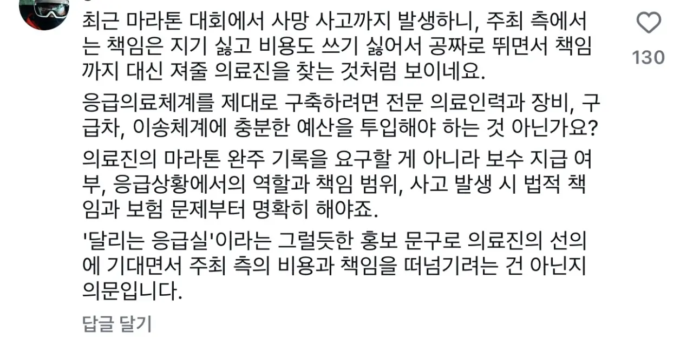

저딴 걸 내놓고 지 딴에는 잘 했다고 생각하겠지
한심하고 양심없는 놈들 같다
그럼 뭐 한 5km 앞에서 다치면 30분동안 뛰어가서 치료하는거야?
레이스 메딕 다치면 메딕 메딕이 치료하나
오토바이 태워줘라 시발 ㅋㅋㅋㅋ
메딕보단 의료선
광역시마다 1년마다 개최제한은 해야할듯. 막힐때마다 스트레스야
돈을,,, 안준다고?
레이스 메딕을 위한 레이스 메딕은?
어이가없네
ㅋㅋㅋㅋ하겠냐고 쉬바 sns관종은 할수도있긴하겠다
다른건 모르겠고 문구에서 쇠맛 너무나서 개 좃같네
댓글?아님 공고?
공고. 저게 쇠맛이 안난다면 ai감도 떨어지는거임....
징글징글한 AI음식 사진 보고, 내가 말해줘도 못느끼는 사람들 있더라. 다 40줄 넘은 사람들이긴 함... 아 30대 중반도 있음. AI 적극적으로 안쓰는 사람들은 못느끼는듯?
졸라 신박한 꺼드럭이네
사람 목숨 지키는 역할인데 혜택이 '참가자와 동일'이면… 심폐소생술 하고 기념품 받아 가라는 거네
미친놈들인가? 의료진이나 서포트 하는 인원은 정상적인 체력을 비축하면서 만일에 사태에
대비해야지 ... 의료진이 뛰다가 지치면 응급환자 대응 참 잘하겠다.
저 병신들이 하는 말은 전시에 군의관이 전방에서 적과 교전하는 틈틈이 부상병들 치료하고
다시 전투에 임하라는 말과 같은거다 ..
저러다 죽으면 메딕을 준비했으니 우리의 의무는 다 했다 할라고?
ㅋㅋㅋㅋ 메딕이 죽으면 어캄?
돈받아 처먹은건 어디두고 공짜로 부르지
군댕에서도 의무병은 훈련똑같이 안뛴다고 미친놈들아 ㅋㅋㅋ 마라톤 뛰다 9km에서 지쳐 뒤지겟는데 응급조치하라고?
요새 제정신이면 안할일에 영어로 이름 대충 만들어낸 완장 붙여주고 호구 모집하는경우 많던데 저런걸 진짜 하는 사람이 있긴 함???
반짝 유행 하는 대한민국에서 런닝도 어느세 없어질거다
의사가 호구로 보이나? 기획자 본인보다 지능이 높은 사람들일텐데
1년에 시도마다 3회정도 제한하고 경쟁입찰시키면 재정에도 도움되고 좋을듯?
지금 마라톤 대회들은 그냥 언론사에서 운영하는 럭키 무인가게임
수익은 본인들이 싹 가져가면서, 인프라랑 운영은 정부한테 싹다 외주 중임
어이가 없네 ㅋㅋ
???: 총알받이 구합니다
일반적으로 마라톤 대회같은걸 하면 의료진들이 어디서 대기해? 일정간격마다 배치되어있는건가? 마라톤 대회 잘 아는 개붕이 있음?
이제 저런 대회들은 좀 쳐맞는 게 맞다
공짜로 진료도 봐줘
결국 무급에 책임만 늘어난 자리라는 건데 누가 하냐 저걸
응급실 환자도 안받는데 퍽이나 하겠네 ㅋ